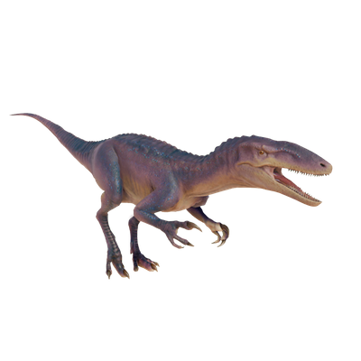

Useful Website
Australovenator is a bipedal theropod from the late Cretaceous period. Its name translates to ‘southern hunter’, in reference to its Australian habitat and carnivorous diet – Australovenator’s lightweight frame and serrated teeth are perfectly designed for stalking prey quickly and effectively. In fact, the palaeontologist who discovered the genus described it as ‘the cheetah of its time’ due to its speed, agility and predatory instincts.
